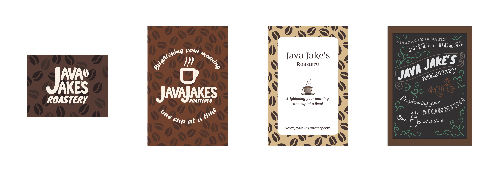
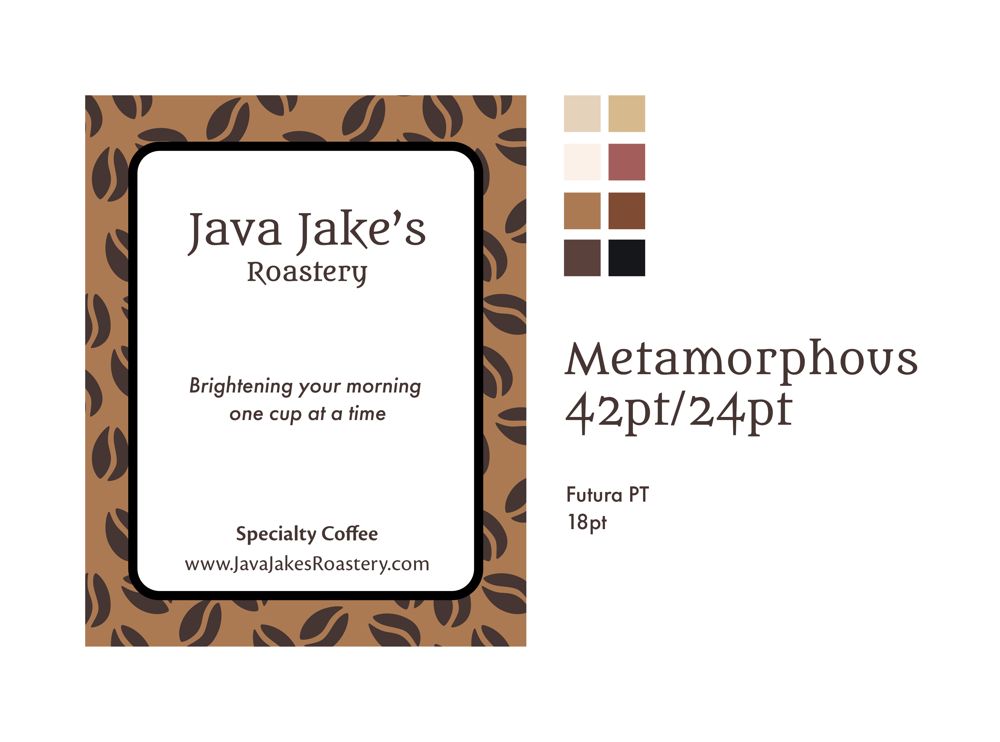

Java Jake's Roastery
Branding for a local coffee roasting company

Jake needed a logo and label for his coffee roasting company. All he had was a name and a catchphrase, so we sat down and talked through some ideas and got to work.
We went through a few different styles and options before settling on one that we both thought would fit the best. From there it was a matter of refining the style and picking colors and fonts. Once Jake was satisfied, it was on to mock-ups, business cards, and finally printing!

